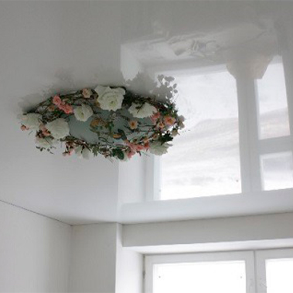

<div class="container project project-view">

    <div class="row">
        <div class="col-md-8 project-images">
            
        </div>
        <div class="col-md-4">
            <div class="project-info">
                <h3>Глянцевые</h3>

				<div class="spacer-single"></div>

                <div class="details col-12">

                    <div class="info-text">
                        <span class="title">Производитель</span>
                        <span class="val">Франция; Германия; Китай.</span>
                    </div>

                    <div class="info-text">
                        <span class="title">Материал</span>
                        <span class="val">ПВХ</span>
                    </div>

                    <div class="info-text">
                        <span class="title">Запах</span>
                        <span class="val">Без запаха</span>
                    </div>


                    <div class="info-text">
                        <span class="title">Толшина</span>
                        <span class="val">00.18 мм; 00.21 мм; 00.24 мм</span>
                    </div>

                    <div class="info-text">
                        <span class="title">Ширина</span>
                        <span class="val">До 5 метров</span>
                    </div>

                    <div class="info-text">
                        <span class="title">Цена</span>
                        <span class="val">От 120 лей м2 белый<br>От 180 лей м2 цветной</span>
                    </div>


                </div>


                <p>
                    Натяжные потолки в глянцевой фактуре на данный момент являются самыми популярными,
                    это обусловлено уникальными качественными характеристиками. Кроме этого, глянцевые
                    натяжные потолки имеют большой ассортимент оттенков и презентабельный внешний вид,
                    благодаря чему дизайнеры могут воплощать в реальность своим самые дерзкие замыслы.
                </p>
				
				<p>
                    Основной особенностью глянцевого натяжного потолка является его лаковая поверхность,
                    которая обладает зеркальным и светоотражающим эффектом. Для того чтобы убедиться в
                    правильности выбора необходимо как следует разобраться в характеристиках лаковых натяжных потолков:
<br><br>
                    -глянцевые натяжные потолки имеют безупречную ровную лаковую поверхность после установки, и остаются в таком виде в течение долгих лет;
                    <br> <br> -глянцевое полотно обладает способностью удерживать воду весом до 100 килограмм, эта особенность поможет защитить помещение от затопления сверху;
                    <br>  <br>-натяжные глянцевые потолки обладают прекрасной звукоизоляции;
                    <br>  <br>-благодаря натяжной конструкции потолка можно скрыть различные неровности основного потолка и электропроводку;
                    <br> <br> -на глянцевых потолках не собирается пыль и не впитываются запахи, благодаря чему не требуется частый уход за полотном;
                    <br> <br>  -лаковые натяжные потолки являются абсолютно безопасными для здоровья человека, они не выделяет никаких токсичных веществ;
                    <br><br> -при установке глянцевого натяжного потолка возможен монтаж любых осветительных приборов, в том числе и декоративного освещения;
                    <br> <br>-монтируется глянцевый натяжной потолок в кратчайшие сроки, не оставляя после себя строительного мусора и излишков материала.
                </p>


            </div>
        </div>
    </div>
</div>